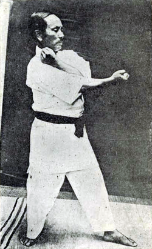
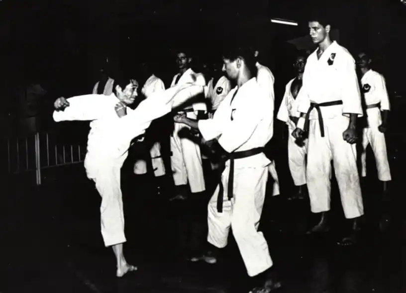

 |
O Criador do Karate Gichin Funakoshi (船越 義珍, Funakoshi Gichin; Shuri, 10 de novembro de 1868 – Tóquio, 26 de abril de 1957, foi o fundador do Shotokan karate-do, talvez o estilo mais amplamente conhecido de karate, e é conhecido como "pai do karate moderno" Seguindo os ensinamentos de Anko Itosu e Anko Asato, ele foi um dos mestres de karate de Okinawa que introduziram o karate no continente japonês em 1922, seguindo sua introdução anterior por seu professor Itosu. Lecionou karate em várias universidades japonesas e tornou-se chefe honorário da Associação Japonesa de Karate após sua fundação em 1949.

|